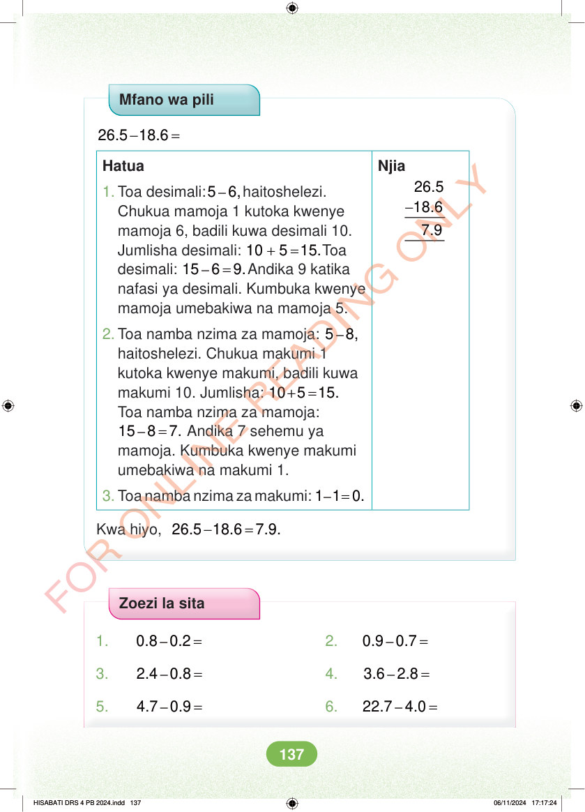

Mfano wa pili - = 26.5 18.6 Hatua Njia - 26.5 18.6 7.9 1. Toa desimali: – 5 6,haitoshelezi. Chukua mamoja 1 kutoka kwenye mamoja 6, badili kuwa desimali 10. Jumlisha desimali: + = 10 5 15.Toa desimali: – = 15 6 9.Andika 9 katika nafasi ya desimali. Kumbuka kwenye mamoja umebakiwa na mamoja 5. 2. Toa namba nzima za mamoja: – 5 8, haitoshelezi. Chukua makumi 1 kutoka kwenye makumi, badili kuwa makumi 10. Jumlisha: + = 10 5 15. Toa namba nzima za mamoja: – = 15 8 7. Andika 7 sehemu ya mamoja. Kumbuka kwenye makumi umebakiwa na makumi 1. 3. Toa namba nzima za makumi: – = 1 1 0. Kwa hiyo, - = 26.5 18.6 7.9. Zoezi la sita 1. – = 0.8 0.2 2. – = 0.9 0.7 3. – = 2.4 0.8 4. – = 3.6 2.8 5. – = 4.7 0.9 6. – = 22.7 4.0 HISABATI DRS 4 PB 2024.indd 137 HISABATI DRS 4 PB 2024.indd 137 06/11/2024 17:17:24 06/11/2024 17:17:24